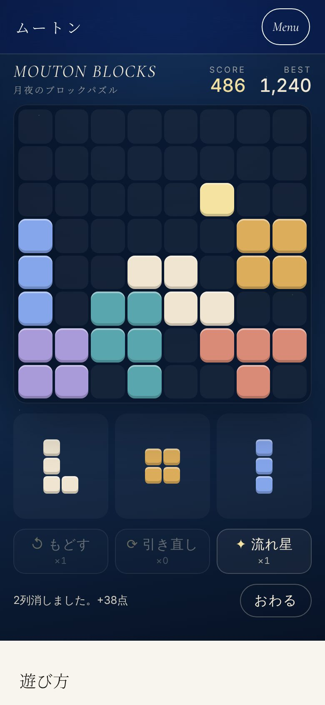

PROJECT 004 / GAME / パズル
MOUTON BLOCKS
そろえて、消して、また置く。
8×8のマスにブロックを置き、縦か横の列をそろえて消すパズル。サイトのアイコンと同じ、紺の夜空・金の月・白い羊毛の色で作った。スマホでもパソコンでも、登録なしで遊べる。
公開中

01 / 今の状態
ここまでと、次の一歩。
- ここまで
- ブロックを置く・列を消す・コンボ・全消しの点数を作った
- ドラッグ、タップ、キーボードの3つの操作で遊べるようにした
- もどす・引き直し・流れ星（3×3を消す）の3つのアイテムを用意した
- スコアをこの端末のランキング（ベスト10）に残し、Xでシェアできるようにした
- 広告を見るとアイテムがもらえる仕組み（Google の H5 ゲーム広告）を組み込んだ。承認されるまでは止めてある
- 次にやること
- AdSense の H5 ゲーム広告の承認を受けて、リワード広告を有効にする。ほかの人と競える全体のランキングは、サーバーと不正対策が要るので、遊ぶ人が増えてから考える。
02 / 制作の記録
進んだ日のこと。
-
月夜の
ブロックパズルを 作った。 8×8のマスにブロックを置いて列を消すパズル。スコアとこの端末のランキング、3つのアイテム、広告でアイテムがもらえる仕組み（承認待ち）まで入れた。
03 / ほかの制作